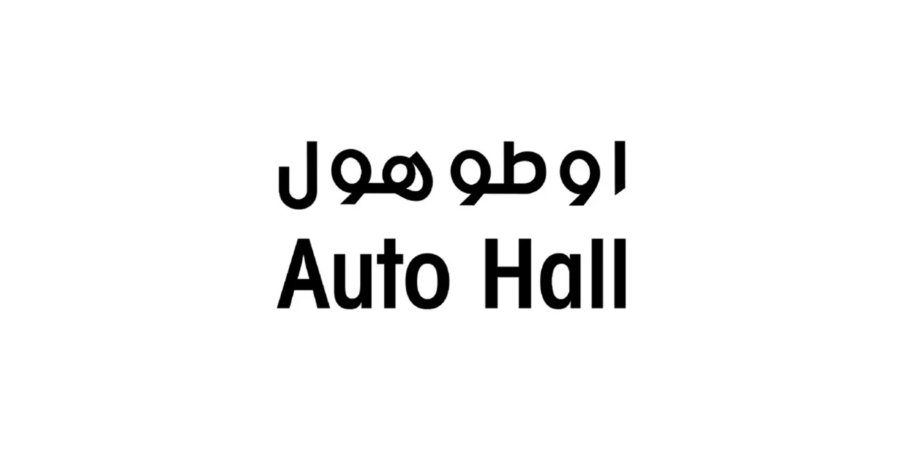
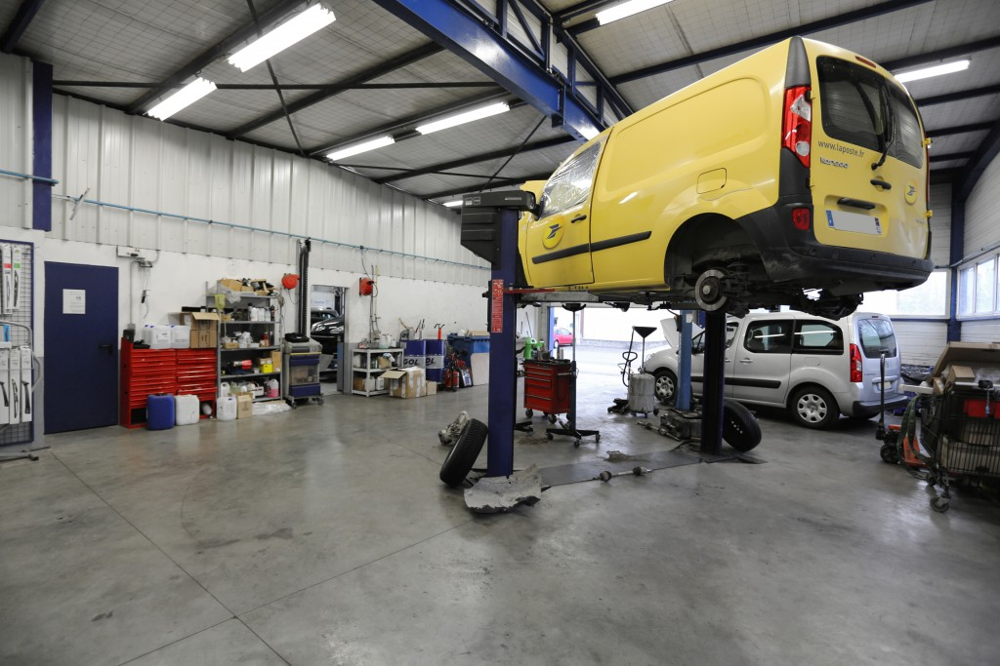

Groupe Auto-hall (Ford)
Découvertes clés :
- Apprentissage des Incoterms utilisés dans la chaîne logistique
- Observation du processus de lancement des projets de commande
- Visite de l'atelier mécanique et analyse des flux
